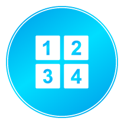

Select a Level, Mode, and picture and hit play!
 Swipe squares to rearrance the puzzle back to its original picture.
Swipe squares to rearrance the puzzle back to its original picture.
Set the game to be as simple or as challenging as you wish. As you get better, increase the challenge level.
Try to beat the clock in Countdown mode or play Moves mode and try to win with the fewest moves possible.
Win games and send challenges your friends to see who is better!
Use cheats for faster times and fewer moves.
 Show what position a square should be in starting from the top left.
 Reveal what the original picture is.
Reveal what the original picture is.
 Swap two squares by tapping one square, then the next.
Swap two squares by tapping one square, then the next.